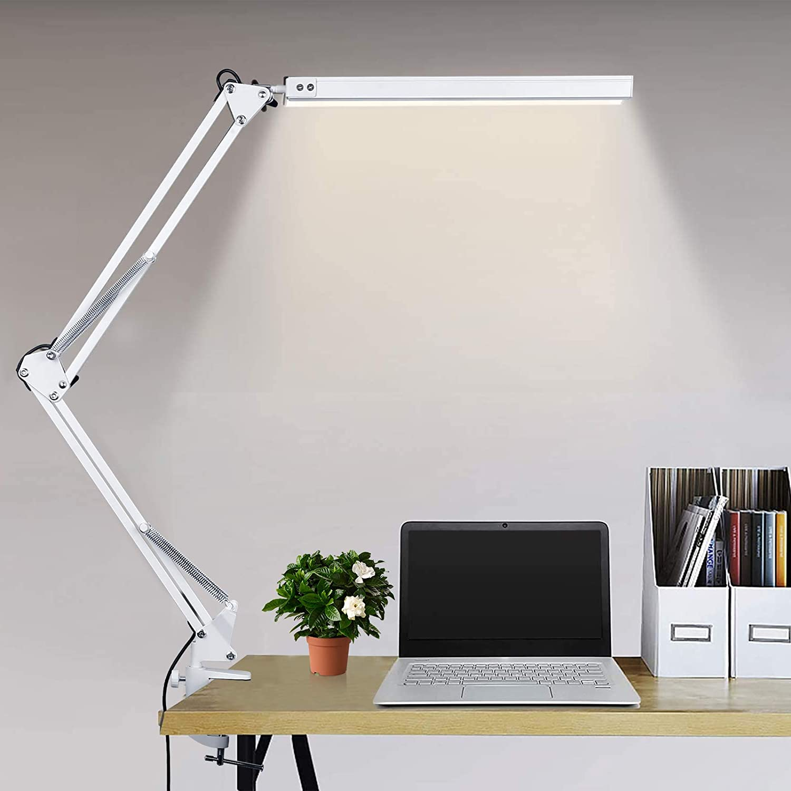

diversidad,modernidad y calidad
evoluion de lamparas y bombillos
Los primeros bombillos eran incandescentes con filamento de carbono; luego se fabricaron bombillos halógenos, que constaban de un hilo de tungsteno cubierto de material halógeno; posteriormente se inventaron las lámparas fluorescentes, la cual era un tubo de vidrio con filamentos de tungsteno en su interior.
invension led
No muchos conocen que el principio del LED fue desarrollado hace ya más de 10 décadas por el capitán Ingles Henry joseph Round, mientras experimentaba con un carburo de silicio y unos bigotes de gato, su descubrimiento dio inicio al desarrollo del LED en 1907.
duraion de vida led
puede durar hasta 50,000 horas de vida. El LED a comparación de los métodos de iluminación tradicionales, puede durar años sin necesidad de ser remplazado, gracias a su composición duradera que da una gran ventaja ante cualquier otro
beneficios de luz led
La Luz LED imita la iluminación del sol, lo cual ayuda a las plantas a realizar su proceso de fotosíntesis, es por ello que las luces led son utilizadas en campos invernaderos de todo el mundo.
diversidad luminica
- lampara de escritorio
- lampara colgante
- lampara portatil